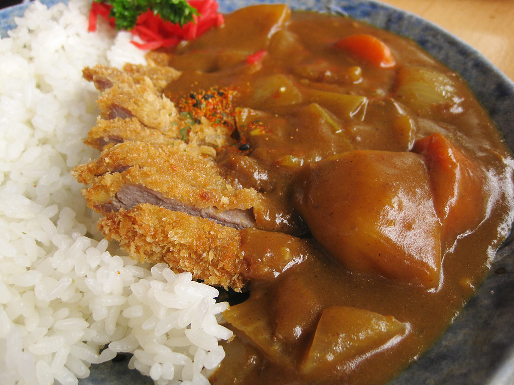

Japanese Curry

Japan's weird flex on Indians that turned out all right
India invented the curry. The British brought it to Japan. And the
Japanese decided to make their own version.
Ingredients
- Chicken
- Rice
- Curry blocks
- Carrots
- Po-ta-toes
Instructions
- Saute the onions
-
Gently lay the chicken in the pan, as if you're tucking in a child
- Vigorously season the chicken with your favorite gestures
- Pour the chicken stock in with the curry cubes
- Make some rice with a rice cooker
Return to main page